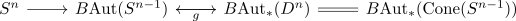
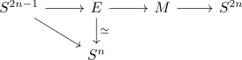

classification of fibre bundle sequences from S^2n-1 to S^n
Proposition
Assume there exists a fibre bundle $f: S^{2n-1} \rightarrow S^n$ with typical fibre $S^{n-1}$ with $n \geq 1$ Then $n$ is a power of $2$
Proof
note that $f$ is classified by

where
is given by the cone of Top functor and classifying space functor after regarding both as discrete groups (cf. discrete group functor)
is a split mono
Hence $f$ is a \(g\)-sphere bundle of a disk bundle $\overline{f}: E \rightarrow S^n$ where $\mathrm{fib}(\overline{f}) = D^n$ and $E$
Then construct a new closed topological manifold
of dimension $2n$
Then the singular cohomology is given by
by the homotopy cofibration sequence

As $M$ is a manifold, we may use that the cup product pairing is non degenerate, hence
with $\vert u \vert = n$ where $M$ is uniquely F_2 orientable
Then by space with cohomology ring as polynomial ring and degree we are done.